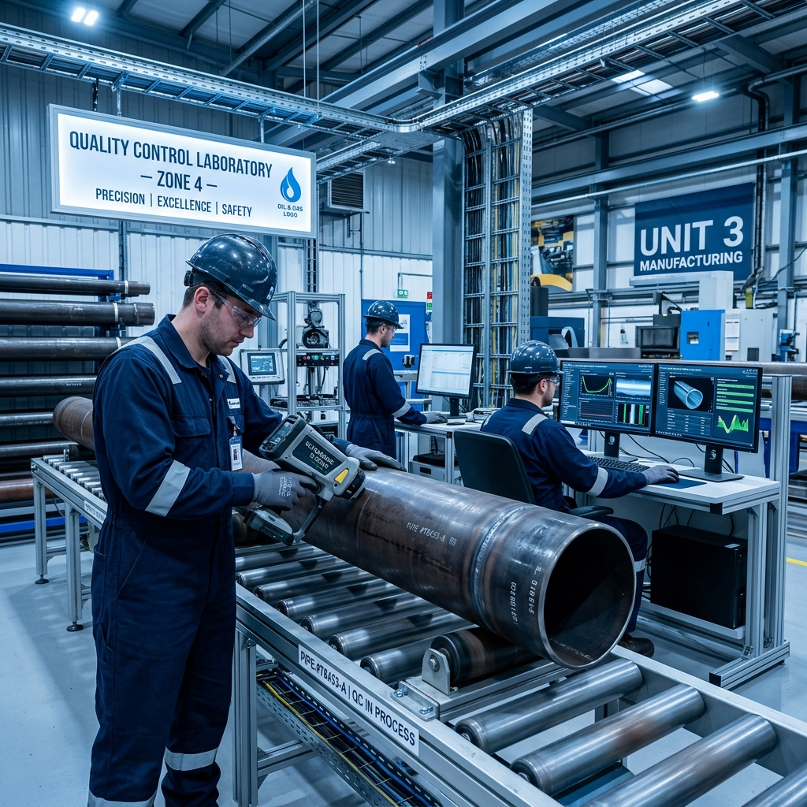
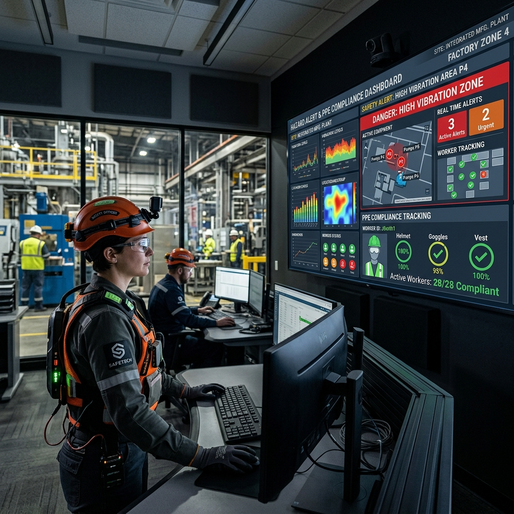
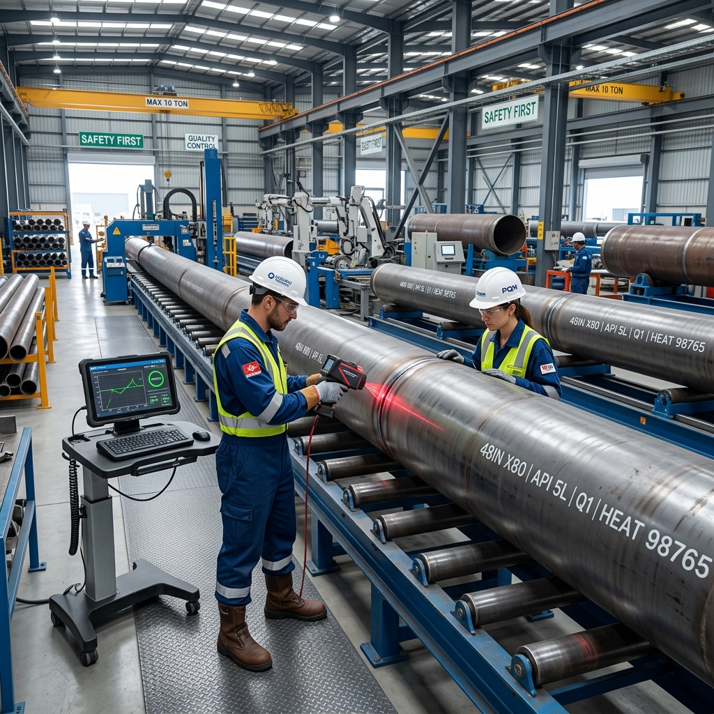
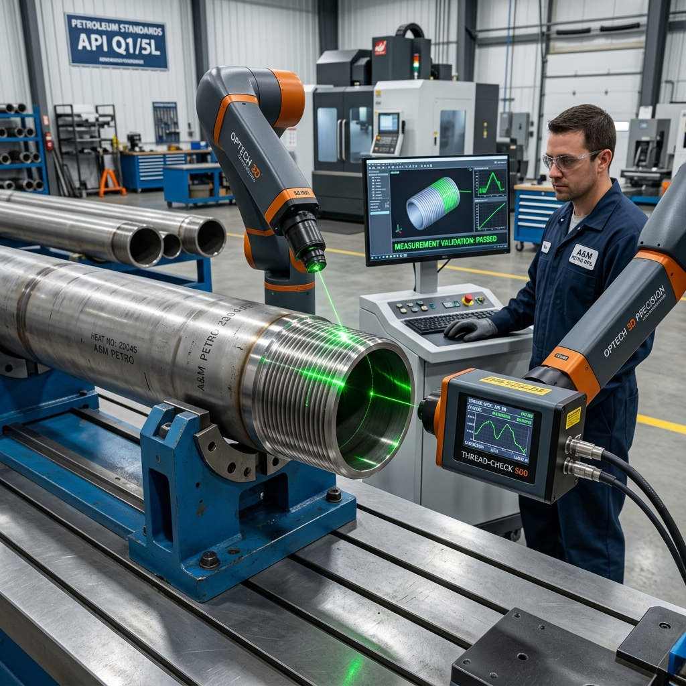

ISO 9001:2015
The foundation of all modern quality management systems, focusing on the process approach and customer satisfaction.
Determining external/internal issues and stakeholder requirements that impact the QMS.
Top management must demonstrate accountability and maintain a customer-focused policy.
Addressing risks and opportunities; setting measurable quality objectives.
The "Do" section — controlling processes, product requirements, and design/development.
Monitoring, measurement, internal audits, and management review.

9001 Value Chain
ISO 14001:2015
Enhancing environmental performance through efficient resource use and waste reduction.
Mandatory determination of whether climate change is a relevant internal or external issue.
Identifying activities that interact with the environment (air, water, land) and their impacts.
Establishing processes to respond to environmental accidents and emergency situations.
Impact Cycle
ISO 45001:2018
Global standard for occupational health and safety (OH&S), aimed at reducing workplace injuries and illnesses.
Consultation with non-managerial workers for hazard identification and policy development.
Proactive identification of OH&S hazards arising from routine and non-routine activities.
Elimination → Substitution → Engineering → Administrative → PPE.

Safety Hierarchy
ISO 50001:2018
Systematic approach to achieving continual improvement of energy performance, including efficiency and consumption.
Analyzing energy use/consumption, identifying SEUs (Significant Energy Uses) and improvement opportunities.
Energy Performance Indicators used to measure results compared to the energy baseline (EnB).
Considering energy performance in the design of new, modified, or renovated facilities and equipment.
Energy Flow
ISO 29001:2020
Specific quality management requirements for product and service supply organizations for the petroleum and natural gas industries.
Enhancements to ISO 9001 to manage supply chain risks specific to the Oil & Gas sector.
Defines the extent of control activities (testing, inspection, verification) based on operational risk.
Strict requirements for maintaining identification and status throughout the production lifecycle.

Traceability Chain
API Q1 (10th Edition)
The industry benchmark for organizations providing products to the petroleum and natural gas industry. Released September 2023.
Planning for potential disruptions (utility loss, raw material shortages) to ensure production continuity.
Rigorous controls for design verification/validation, including documentation of design changes.
Supplier evaluation based on the criticality of products/services to the final product integrity.
Audits must cover all QMS elements and specific technical requirements of the monogram program.
